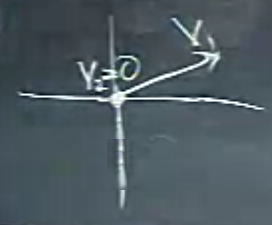
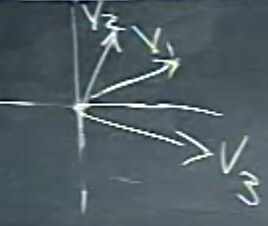
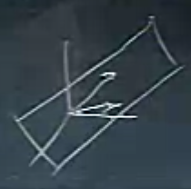

Ders 9
Bu derste lineer bir vektörler kümesinin bağımsızlık, ya da bağımlılık durumuna bakacağız. Bir vektör uzayı, ya da altuzay için baz (basis) nedir, merkezi konumuz bu. Bir altuzayın boyutu ne anlama gelir? Bu kelimelere net anlamlar yükleyeceğimiz kritik ders bu olacak. Odağımızın ne olduğuna dikkat, bir matrisin değil bir vektör kümesinin bağımsızlığından, bir vektör kümesinin bir uzayı kapsamasından (span) bahsediyor olacağız.
Daha önce vurgulamadığım önemli bir bilgiyi hemen gündeme getirmek istiyorum; diyelim ki elimde $m \times n$ boyutlarında $A$ matrisi var, ve $Ax=0$ durumunu inceliyorum, ve $m < n$, yani $m$ tane formül var, ama ondan daha fazla bilinmeyen var.
Bu durumda $A$'nin sıfır uzayında birşeyler vardır (sıfır vektör haricinde tabii). Niye? Sebebini biliyoruz, zaten kabaca düşününce formülden fazla bilinmeyen olunca bazı çözümler olması normal. Daha detaylı olarak, daha önce bu işin algoritmasını gördük, elimde kesin serbest değişkenler olacak, ve bu değişkenlere istediğim değerleri atayacağım, sonra geriye koyma ile bazı başka değerler bulacağım, vs. Yani sıfır olmayan sonuçlar elde edebileceğim.
Bu matris durumu idi. Şimdi bağımsızlık konusuna gelelim.
Bağımsızlık
Vektör $x_1,x_2,..,x_n$ lineer olarak bağımsızdır (ileride lineer kelimesini kullanmayacağım, direk bağımsız diyeceğim), eğer bu vektörlerin hiçbir kombinasyonu, ki kombinasyon $c_1x_1+...+c_nx_n$ olarak tanımlanabilir, sıfır sonucunu vermiyor ise. Burada sıfır kombinasyonunu ayrı tutuyorum, yani $c_1=..c_n=0$ durumu), sıfır kombinasyonu, yani her vektörün sıfır ile çarpıldığı durum üstteki tarife dahil değil. Bu durum tatmin edilmiş ise, o zaman $x_1,..,x_n$ bağımsızdır. Eğer tek bir tane bile sıfır sonucunu verecek kombinasyon var ise, o zaman bu vektörler bağımlıdır.
Örnek
Diyelim ki arka arkaya duran iki vektör var, biri diğerinin iki katı, ve aynı yönü gösteriyorlar [hocanın çizimi tam olmadı ama aynı yöndeler :)]. Bu vektörler bağımsız mıdır? Hayır. Çünkü sıfır elde etmek kolay, $2v_1 - v_2 = 0$. Yani sıfır sonucunu elde edebilecek bir kombinasyon mevcut.
Peki alttaki durumda?

Ki $v_2$ sıfır vektör. Hangi $c_1,c_2$ için $c_1v_1+c_2v_2$ sıfır sonucunu alırım? Eğer $c_1=0,c_2=6$ dersem sıfır sonucu gelir, tabii $c_1=0$ dedikten sonra $c_2$ ne seçersem seçeyim sıfır sonucu olurdu zaten. Yani sıfır vektörü işin içine dahil ise, ortada bağımsızlık kalmaz, sıfır sonucunu verecek ve kendisi sıfır olmayan bir kombinasyon muhakkak bulunur.
Ya alttaki durum?

Gelişigüzel üç tane vektör çizdim. Cevap bağımlı, nereden biliyorum? Çünkü üstte belirttiğim $m < n$ durumu sayesinde. Bağlantı nerede? $A$'yi şöyle yazarsam,
$$ A = \left[\begin{array}{rrr} \uparrow & \uparrow & \uparrow \\ v_1 & v_2 & v_3 \\ \downarrow & \downarrow & \downarrow \end{array}\right] $$
ya da resme bakarak kabaca bazı büyüklükler yazarsam mesela,
$$ A = \left[\begin{array}{rrr} 2 & 1 & 2.5 \\ 1 & 2 & -1 \\ \end{array}\right] $$
Bu matrisin boyutları $2 \times 3$. Elimizde bazı serbest değişkenler olacak, ve
$$ A = \left[\begin{array}{rrr} 2 & 1 & 2.5 \\ 1 & 2 & -1 \\ \end{array}\right] \left[\begin{array}{r} c_1 \\ c_2 \\ c_3 \end{array}\right] = 0 $$
durumunda $c_1,c_2,c_3$ için bir çözüm olacak. $A$'nin kolonları bağımlı, çünkü onları belli şekillerde kombine ederek sıfır sonucunu elde edebiliyorum.
Yani eğer $n$ boyutunda isem bağımsızlık sorusunu vektörleri matrisin kolonlarına yerleştirerek direk cevaplandırabilirim. Vektörler bağımsızdır eğer bu vektörlerin yerleştirildiği $A$'nin sıfır uzayında sadece sıfır vektörü var ise. Eğer yani sıfır uzayında sıfır vektörü haricinde başka vektörler var ise, o zaman vektörler bağımlıdır.
Üsttekini kerteler üzerinden ifade edelim; eğer kerte $r = n$ ise bağımsızlık vardır, çünkü tüm kolonlarda bir pivot olur. Bağımlılık durumunda $r < n$, serbest değişkenler var, diğer durumda yok.
Kapsamak (Span)
Eğer bir uzay $v_1,...,v_n$ vektörlerinin tüm kombinasyonlarından oluşuyor ise, bu vektörlerin bu altuzayı kapsadığı söylenir.
Elimde birkaç vektör varsa, $S$ diye bir uzayı kapsadıklarını söyleyebilirim, ki $S$ bu vektörlerin tüm kombinasyonlarını içerir, bu $S$ uzayı bu vektörleri içinde tutabilecek en ufak uzay olacaktır. Bu vektörleri içeren başka uzaylar da olabilir, ki tanım itibariyle bu uzaylar aynı şekilde, en azından, tüm kombinasyonları içermelidir (tabii daha fazlasına da sahip olabilirler). Ama sadece tüm kombinasyonları içeren uzay en minimal ve kapsanan uzaydır.
Kolon uzayına gelelim: bir matrisin kolonlarını alıp tüm kombinasyonlarını hesaplarsam kolon uzayını elde ederim. Bu kolonlar kolon uzayını kapsarlar.
Peki kolonlar bağımsız mıdır? Belki evet, belki hayır, bu kolonların ne olduğuna bağlı. Bana en ilginç gelen durum bağımsız oldukları durum, çünkü bu durumda tam kararında vektöre sahibim demektir. Daha fazlası bağımlılık olur, daha azı, kolon uzayını oluşturamam. Tam kararında olduğu durum eldeki vektörlerin bir baz oluşturduğu durumdur. İşte "baz" kelimesi burada devreye girdi.
Tanım
Bir vektör uzayının bazı $v_1,...,v_d$ gibi bir vektör dizisidir, ki bu dizinin iki özelliği vardır
1) Vektörler bağımsızdır
2) Vektörler tüm uzayı kapsarlar
Bir altuzayı tarif etmek için mesela bana onun bazını verirseniz, bu uzayı tamamen tarif etmiş olursunuz.
Ornek
Uzay $\mathbb{R}^3$ olsun. Bana bu uzay için bir baz verin. Bu bir vektör listesi olacak, ve bu vektörler tam kararında olmalı. Bir baz şu olabilir,
$$ \left[\begin{array}{r} 1 \\ 0 \\ 0 \end{array}\right], \left[\begin{array}{r} 0 \\ 1 \\ 0 \end{array}\right], \left[\begin{array}{r} 0 \\ 0 \\ 1 \end{array}\right] $$
Tek baz değil, dikkat. Ama bu bir baz. Vektörler bağımsız mı? Evet. Yani, nihayetinde üstteki vektörler $x,y,z$ eksenlerini temsil ediyorlar, ve bu eksenler birbirinden bağımsız olmasa başımız dertte demektir :) Bağımsızlık testi neydi, üstteki vektörler $c_1,c_2,c_3$ ile çarpıp toplasam ve sıfır elde edersem, $c_1=0,c_2=0,c_3=0$ demektir, başka hiçbir kombinasyon bunu başaramaz.
Matris dilinde konuşmak istersek, üstteki vektörleri bir matrisin kolonları yapabilirdim, ve bu matris tanıdığımız, bildiğimiz birim matrisi olurdu. O zaman "birim matrisinin sıfır uzayı nedir?" diye bir soru sorabilirdim, cevap "sadece sıfır vektörü" olurdu. Bunu duyunca ben de "tamam, o zaman kolonlar birbirinden bağımsız" derdim.
Başka bir baz bulabilir miyim? Diyelim ki [hoca kafadan atarak iki vektör yazıyor, ama herhalde zihninin bir köşesinde bu vektörlerin birbirinin katı olmamasına dikkat ediyordur],
$$ \left[\begin{array}{r} 1 \\ 1 \\ 2 \end{array}\right], \left[\begin{array}{r} 2 \\ 2 \\ 5 \end{array}\right] $$
Tahminimiz "hayır" değil mi? Herhalde hafiften seziyoruz ki $\mathbb{R}^3$'te bazı vektörler vardır ki üstteki iki vektörün kombinasyonu olarak temsil edilemezler. O zaman bir vektör daha eklemek lazım, çünkü üstteki iki vektör $\mathbb{R}^3$'u kapsamıyor. Hangi vektörü eklemeliyim? Eğer $\left[\begin{array}{rrr}3&3&7\end{array}\right]^T$ eklersem bu kötü bir seçim olurdu, çünkü bu vektör üstteki iki vektörün toplamıdır, yani bu yeni vektör bağımlı olur, diğer iki vektör ile aynı düzlemde olur.
O zaman hangi vektörü seçmeliyim? Üstte tarif ettiğim düzlemde olmayan herhangi bir vektörü seçebilirim. Bir tane seçiyorum; hepsi bir arada
$$ \left[\begin{array}{r} 1 \\ 1 \\ 2 \end{array}\right], \left[\begin{array}{r} 2 \\ 2 \\ 5 \end{array}\right], \left[\begin{array}{r} 3 \\ 4 \\ 8 \end{array}\right] $$
Galiba bu oldu, en azından 3. vektör diğer ikisinin toplamı değil [hoca burada bir hata yapmıştı, bir sonraki derste düzeltti, buraya düzeltilmiş hali koyduk]. Peki bu vektörlerin baz olup olmadığının kesin testi nedir? Onları bir matrisin kolonlarına koyarsınız, eliminasyon uygularsınız, serbest değişken ortaya çıkıyor mu bakarsınız, ya da tüm kolonlar pivot kolonları mıdır, ona bakarsınız. Gerçi elimizde bir kare matris olur, o zaman en basit kontrol matrisin tersi alınabilir olup olmadığı.
Şimdi iki vektör durumuna dönelim,
$$ \left[\begin{array}{r} 1 \\ 1 \\ 2 \end{array}\right], \left[\begin{array}{r} 2 \\ 2 \\ 5 \end{array}\right] $$
Bu iki vektör herhangi bir uzay için baz oluşturur mu?
Tabii ki, bu mümkün olabilir. Bu iki vektör bağımsız. Kabaca çizersem onları,

Bu iki vektörün tüm kombinasyonları bir düzlemi kapsayabilir, bu uzay $\mathbb{R}^3$'un tamamı olmayabilir, ama üstte görüldüğü gibi onun içindeki bir düzlem olabilir [belki çizimden anlaşılmıyor, iki vektör düzlemin tam üzerinde, yani içinde].
Kötü seçim olan $\left[\begin{array}{rrr}3&3&7\end{array}\right]^T$'i eklersem, bu üç vektör yine üstteki düzlemi kapsar, ama o zaman eldeki vektörler bir baz olmaz, çünkü ilk iki vektörü kullanarak 3. vektörü oluşturabilirim.
Neler öğrendik? Baz özgün (unique) değil. Aynı uzayı tarif eden pek çok baz olabilir. Fakat bu bazların bir ortak noktası var. Herhalde ne söyleyeceğimi hafiften tahmin ediyorsunuz, zaten üstte 3 vektörden 2 vektöre geri dönünce bu iki vektörün bir baz olmayacağını hissetmiştiniz. Niye? Çünkü sayıları yeterli değil. 3 boyutlu bir uzay olan $\mathbb{R}^3$'i kapsamak için 3 tane vektör gerekir. Eğer uzay $\mathbb{R}^n$ olsaydı baz için gerekli vektör sayısı $n$ olurdu.
Kural
Verilen bir uzay için, ki bu kolon uzayı, bir sıfır uzayı, vs. bile olabilir, bu uzay için bulunacak her baz içinde aynı sayıda vektör olmalıdır.
$S_1$ uzayının bir bazında 6 vektör var ise, bir diğeri içinde de 6 vektör olmalıdır. Bu 6 sayısı bana bu uzayın ne kadar büyük olduğunu da söylüyor bir bakıma. Ve tabii kontrol için de bu iyi, başka bir yönden 7 tane vektör bulmuşsam 1 tane fazla bulmuşum, 5 tane ise bir tane eksik.
Bu sayı nedir? Bugünün son tanımına geldik böylece, bu sayı o uzayın boyutudur.
Örnek
Uzay $C(A)$, yani $A$'nin kolon uzayı. $A$ şöyle,
$$ \left[\begin{array}{rrrr} 1 & 2 & 3 & 1 \\ 1 & 1 & 2 & 1 \\ 1 & 2 & 3 & 1 \end{array}\right] $$
Üstteki matrisin kolonları $A$'nin kolon uzayını kapsar mı? Evet, çünkü zaten kolon uzayının tanımı budur. Peki üstteki kolonlar bir baz oluşturur mu? Bu kolonlar bağımsız mı? Hayır. Sıfır uzayında sıfır olmayan vektörler olacak. Mesela? Kolonlara bakıyorum, 3. kolon 1. ve 2. kolonun toplamı, o zaman
$$ \left[\begin{array}{r} -1 \\ -1 \\ 1 \\ 0 \end{array}\right] $$
vektörü sıfır sonucunu verir. Yani bağımsızlık yok, baz üstteki 4 vektör değil. Peki hangi vektörler üstteki matrisin kolon uzayı için bir baz? Ödevlerde, sınavlarda bu soru olarak çıkacak, "vs. matrisinin kolon uzayının bazını bul". Tabii ki pek çok farklı cevap olabilir, en doğal olan cevap nedir?
Doğal cevap pivotların olduğu kolonlardır. Eğer bu matris üzerinde eliminasyon yapsam iki tane pivot çıkartabilirdim sadece. Pivot sayısı aynı zamanda matrisin kertesidir. Eğer pivotlar bir baz oluşturuyorsa o zaman şunu da söyleyebilirim, pivot sayısı $A$'nin kolon uzayının boyutudur.
Dilin kullanımına dikkat: $A$'nin boyutu demiyorum, ya da $A$'nin sıfır uzayının boyutu demiyorum, $A$'nin kolon uzayının boyutu diyorum. Aynı şekilde, bir altuzayın kertesinden bahsetmiyorum, bu yanlış olurdu, $A$'nin kertesinden bahsediyorum. $A$'nin kertesi aynı zamanda kolon uzayının boyutu ile aynı. Terimleri doğru yerlerde kullanmak lazım.
Peki üstteki matrisin kolon uzayının başka bir bazı ne olabilir? Eh, 1. ve 2. kolonları almıştık önce, niye 1. ve 3. kolonlar olmasın? Ya da 2. ve 3, ya da 2. ve 4.. Matrisin kolonları dışında bir baz da olabilir bu arada. Mesela,
$$ \left[\begin{array}{r} 2 \\ 2 \\ 2 \end{array}\right], \left[\begin{array}{r} 7 \\ 5 \\ 7 \end{array}\right] $$
- vektörün nereden geldiği bariz, 2. vektör $A$'nin tüm kolonlarının toplamı. Vektörler bağımsız, ve sayı doğru, iki tane vektör.
Sıfır uzayına gelelim: $A$'nin sıfır uzayının boyutu nedir? Mesela biraz önce bulduğumuz vektör
$$ \left[\begin{array}{r} -1 \\ -1 \\ 1 \\ 0 \end{array}\right] $$
bu uzayı kapsamak için yeterli mi? Hayır. En azından bir tane daha vektöre ihtiyacım var. Üstteki vektörün son iki hücresini serbest değişken denemesi olarak kabul edersem, değişik serbest değişkenlere göre ilk iki hücre için farklı değerler hesaplayabilirim,
$$ \left[\begin{array}{r} -1 \\ -1 \\ 1 \\ 0 \end{array}\right], \left[\begin{array}{r} -1 \\ 0 \\ 0 \\ 1 \end{array}\right] $$
Üstteki vektörler aynı zamanda iki özel çözüm değil mi? Çünkü farklı serbest değişken atamalarıyla onları elde ettim bir bakıma. Peki bu iki vektör sıfır uzayı için bir baz oluşturur mu? Evet. İspatını vermiyoruz ama cevap evet. Sıfır uzayının boyutu 2. Sıfır uzayının boyutu aynı zamanda serbest değişken sayısına eşit. Ya da $n-r$'ye eşit.
Yukarı